Japan's nine traditional regions, each with one to three signature crafts. Click any craft image to visit the official artisans' association, or use the buttons below each card to find hotels and book hands-on workshops nearby.
木彫り
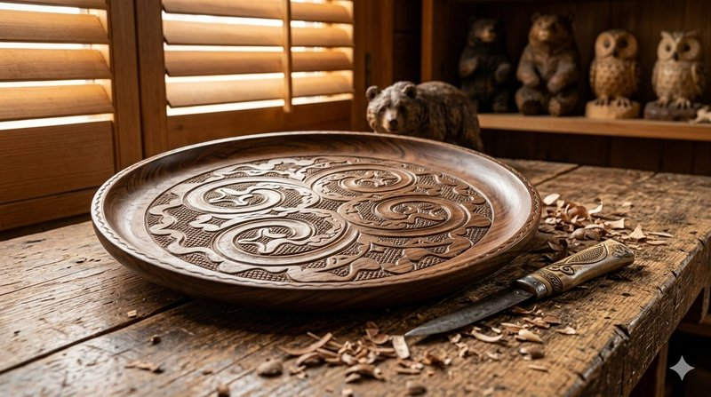
The indigenous Ainu people of Hokkaido have carved wood for centuries, transforming birch, walnut, and katsura into ritual objects, tools, and beautifully patterned trays and itak boxes. The signature geometric motifs — the moreu spiral and the aiushi thorn — repeat across spoons, salmon-skin scabbards, and totem-like figures, each pattern carrying spiritual meaning and warding off evil. Master carvers in Biratori and the Lake Akan area still work by hand using traditional makiri knives, the craft passed down generation to generation. The Upopoy National Ainu Museum in Shiraoi offers carving demonstrations, and Biratori artisan villages welcome visitors for workshops.
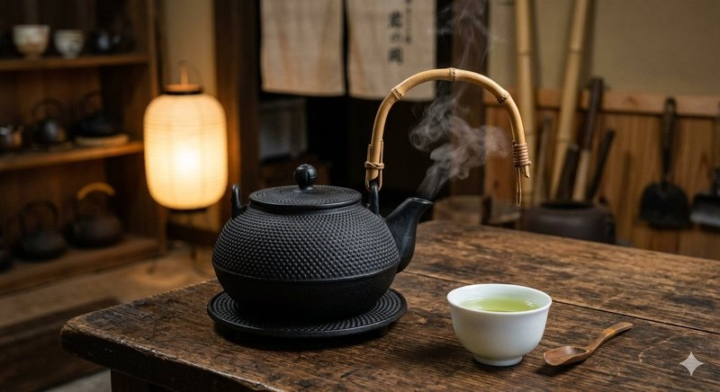
Cast-iron kettles with a 400-year heritage, Nambu Tekki was born when feudal lord Nanbu Toshinao invited Kyoto kettle-makers to settle in 17th-century Morioka. The pebbled "arare" surface texture is the craft's signature, achieved by pressing tools into wet sand molds before pouring molten iron. Beyond beauty, Nambu kettles release trace iron into boiled water — long believed to enhance flavor and treat anemia. Foundries like Iwachu, Oitomi Kobo, and Suzuki Morihisa Studio still hand-finish each piece, while contemporary makers collaborate with international designers. The Iwate Industry Museum in Morioka offers casting workshops by appointment year-round.
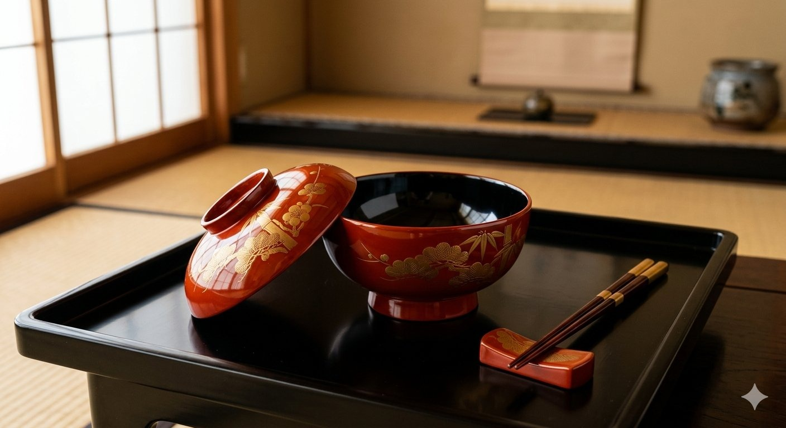
Born in 1590 when feudal lord Gamō Ujisato relocated lacquer artisans from Ōmi to Aizu, this craft has shaped Fukushima's identity for over four centuries. Aizu pieces are recognized by their distinctive maki-e gold-powder painting, hana-nuri high-gloss finish, and tetsu-sabi rust-textured surfaces. Trays, bowls, and ceremonial sake cups are built up over months — wood base, multiple urushi lacquer coats, sanding, then decoration — by craftsmen who work through long Aizu winters. Aizu-Wakamatsu's Suzukatsu Shikkiten and Fukunishi Sōemon Shoten represent unbroken family lineages. The Lacquerware Museum runs hands-on chinkin engraving and maki-e workshops daily.
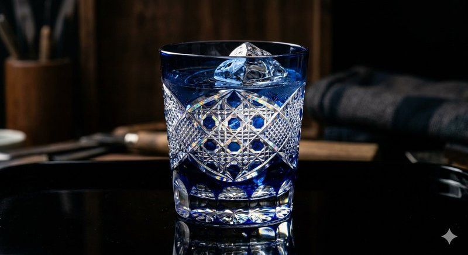
The cut-glass tradition of old Edo, Kiriko began in 1834 when Kagaya Kyubei applied British faceting techniques to colored overlay glass. Ruby and indigo glass is layered over clear crystal, then cut by hand on spinning grindstones to reveal sparkling geometric patterns — the chrysanthemum, hemp leaf, and basket-weave motifs that signify Edo Kiriko at a glance. Today's Sumida-ku artisans like Hanashyo and Horiguchi Glass Studio continue cutting tumblers, sake cups, and modern lighting fixtures by traditional hand methods. The Sumida Edo Kiriko Hall in Tokyo offers two-hour cutting workshops where visitors take home a piece they have engraved themselves.
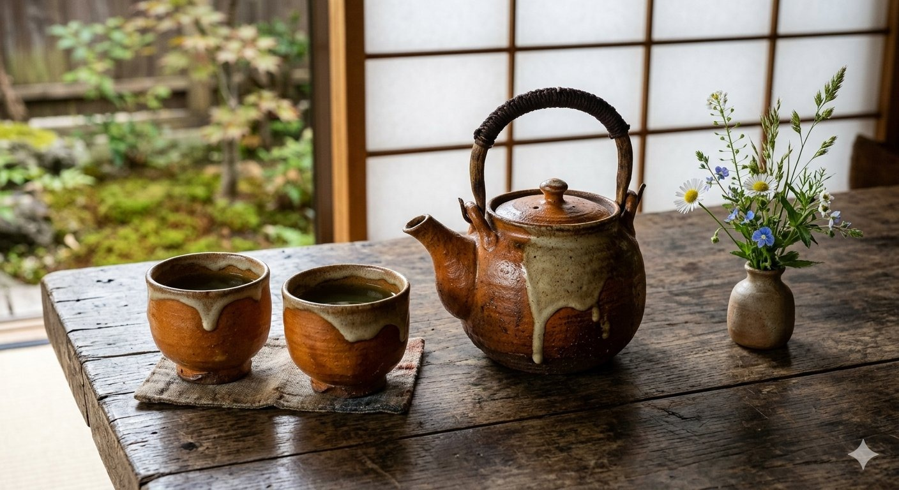
The earthy, unpretentious folk pottery of Tochigi prefecture became famous through Hamada Shōji, the Living National Treasure who settled here in 1924 and championed the mingei folk-craft movement alongside British potter Bernard Leach. Mashiko clay is coarse and iron-rich, naturally absorbing ash glazes that produce the distinctive persimmon-brown kaki, deep-blue gosu, and milky nuka tones. Tea bowls, plates, and casseroles emerge with a warm hand-hewn quality prized in everyday Japanese tables. Twice yearly the Mashiko Pottery Market draws 500,000 visitors. Hamada's preserved studio and over 250 active kilns offer wheel-throwing workshops year-round for travelers.
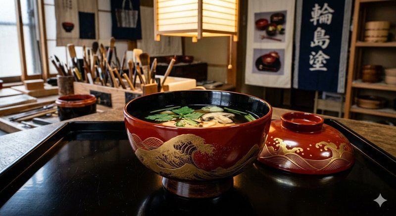
Often called Japan's finest lacquerware, Wajima Nuri from the Noto Peninsula has perfected its craft over four centuries. Each piece undergoes 124 separate steps across half a year — from local jinoko diatomaceous earth strengthening the wooden base to the final mirror-polish chiyonuri finish. The result is famously durable: Wajima bowls survive boiling water and decades of daily use. Maki-e gold painting and chinkin engraving add ornament for wedding sets and Buddhist altar fittings. The Ishikawa Wajima Urushi Art Museum showcases historic masterworks, while the Wajima Lacquerware Center offers chopstick-decorating workshops perfect for first-time visitors.
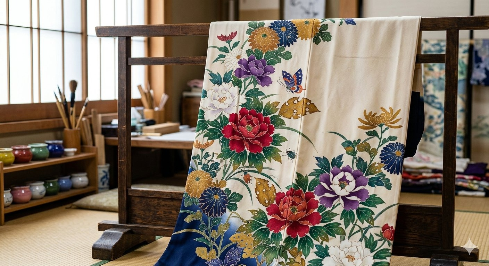
The aristocratic silk-dyeing tradition of Kanazawa, Kaga Yuzen distinguishes itself from its Kyoto cousin through realistic painting rather than stylized motifs. The five "Kaga Five Colors" — indigo, deep red, ochre, dark green, and royal purple — are hand-applied through resist-paste stenciling, with shading that mimics actual leaves, flowers, and birds. The signature mushikui technique paints insect-bitten holes onto leaves for hyper-realism. Founded by Yuzensai Miyazaki in the 17th century, master artisans still work in Kanazawa workshops along the Saigawa River. The Kaga Yuzen Traditional Industry Center near Kenrokuen Garden offers introductory dyeing workshops daily.
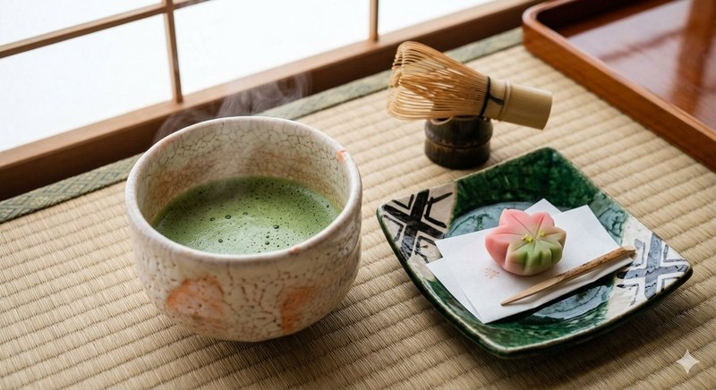
Japan's most-produced ceramic style, Mino Ware accounts for over half the country's everyday tableware. The kilns of Tajimi, Toki, and Mizunami in Gifu prefecture have fired clay for 1,300 years but flourished during the Momoyama tea-ceremony era when masters like Furuta Oribe championed bold, asymmetrical pieces. Mino encompasses many sub-styles: jet-black Setoguro, milky-white Shino, vivid green Oribe, and yellow Kiseto, each with distinctive glaze and form. The annual Tajimi Mino Pottery Festival fills the streets with tents in April. The Museum of Modern Ceramic Art Gifu and dozens of working kilns welcome workshop visitors year-round.
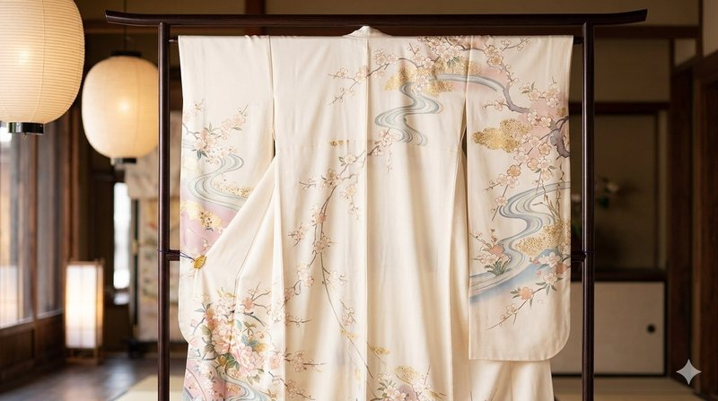
The most refined silk-dyeing tradition in Japan, Kyo Yuzen was perfected in 17th-century Kyoto by fan-painter Miyazaki Yuzensai. Each kimono passes through over twenty hands — outline drawing, resist-paste stenciling, multi-color hand-painting, gold-leaf application, embroidery — across many months. The Kyoto style favors pastel backgrounds with delicate auspicious motifs: cranes, plum blossoms, flowing water, the seasons themselves rendered in poetic miniature. Workshops cluster in the Nishijin and Higashiyama districts, where companies like Chiso (founded 1555) still serve imperial families. The Marumasu Nishimuraya offers brush-dyeing workshops where visitors paint their own silk handkerchief.
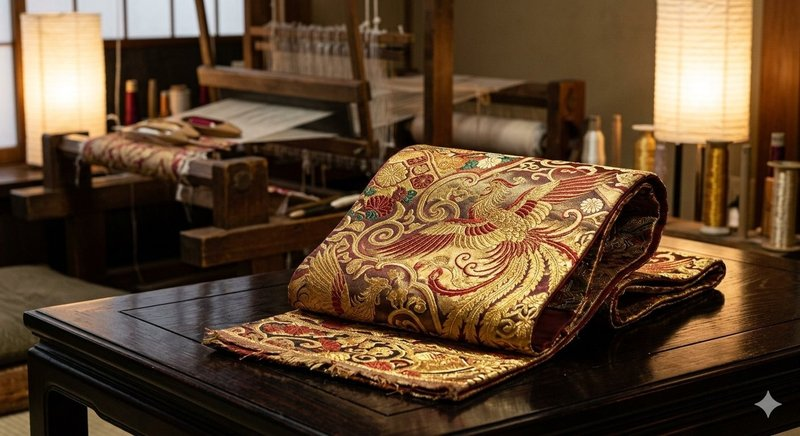
The brocade-weaving capital of Japan, Nishijin produced silks for emperors, court nobles, and Noh theater for over a thousand years. The district takes its name from the Western Camp of the Onin War; weaving recommenced after the 1467 conflict and has continued unbroken since. Up to 30 different types of weaving — traditional drawloom obi, jacquard kimono fabric, gold-thread brocade — are produced in the narrow streets of northwestern Kyoto. Patterns can require thousands of warp threads aligned by hand. The Nishijin Textile Center hosts daily kimono shows, weaving demonstrations, and small-loom hands-on classes for international visitors year-round.
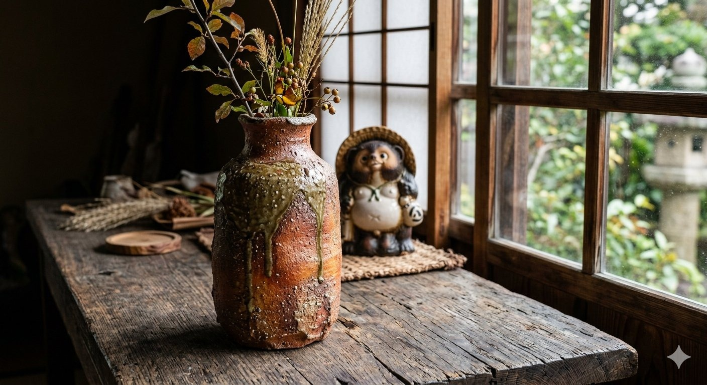
One of Japan's Six Ancient Kilns, Shigaraki has fired pottery in this Shiga mountain village for over 700 years. The local clay is coarse and iron-rich, producing rugged surfaces flecked with white feldspar — the wabi-sabi aesthetic that tea masters like Sen no Rikyū prized for their tea bowls. Beyond rustic vessels, Shigaraki is famously the home of the smiling tanuki raccoon-dog statues found outside restaurants and homes throughout Japan. The Miho Museum nearby alone is worth the trip. The Shigaraki Ceramic Cultural Park offers wheel-throwing classes and a residency program where international artists work alongside local potters.
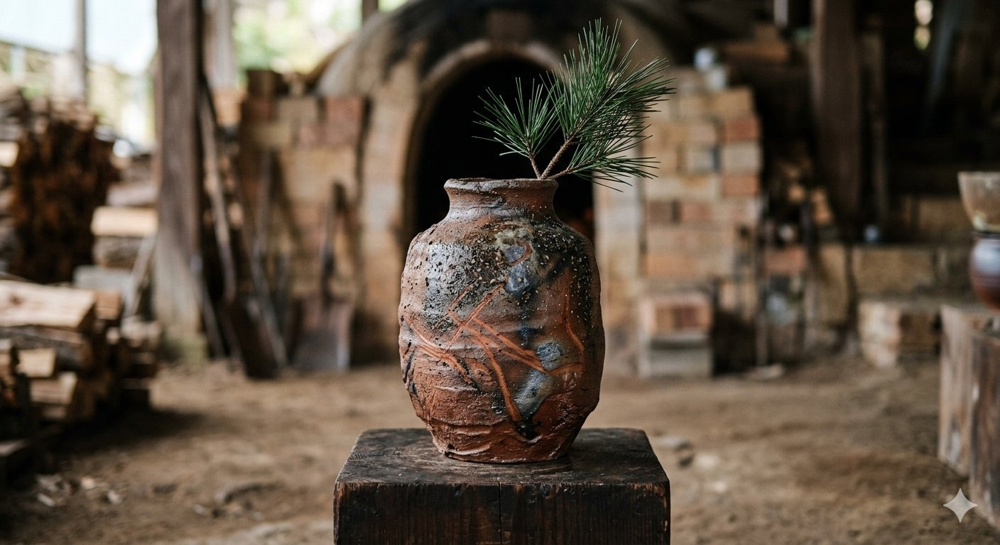
The original unglazed stoneware of Japan, Bizen Ware has fired pottery in Inbe, Okayama for over a thousand years and counts among the Six Ancient Kilns. The unique surfaces — burnt-orange goma, blackened sangiri, and the rice-straw rope marks of hidasuki — are produced entirely by ash and flame inside long anagama kilns, never by applied glaze. Each firing takes twelve days and consumes truckloads of red pine. The clay's iron content gives Bizen wares legendary porosity that softens drinking water and aerates sake. The Bizen Pottery Museum and dozens of working kilns offer wheel-throwing classes for visitors year-round.
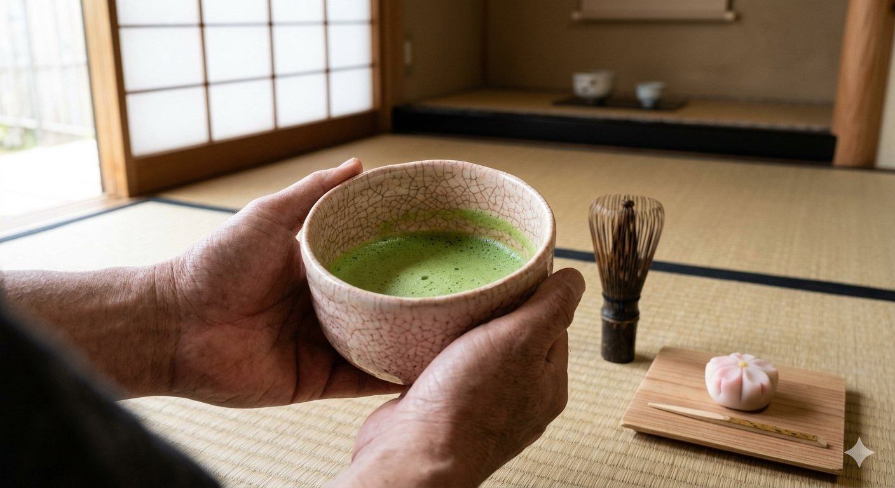
The understated tea-ceremony pottery of Yamaguchi, Hagi Ware was founded in 1604 when Korean potters were brought to the region by feudal lord Mōri Terumoto. Hagi pieces are prized for their soft cream and salmon-pink glazes, fine network of cracks called kannyū, and the way the tea-stained clay matures and changes color with daily use — the famous "seven changes of Hagi" celebrated by tea practitioners. Over a hundred kilns operate in this small castle town. The Hagi Pottery Festival each May draws collectors nationwide. The Hagi Pottery Hall and family kilns offer wheel-throwing workshops in tranquil garden settings.
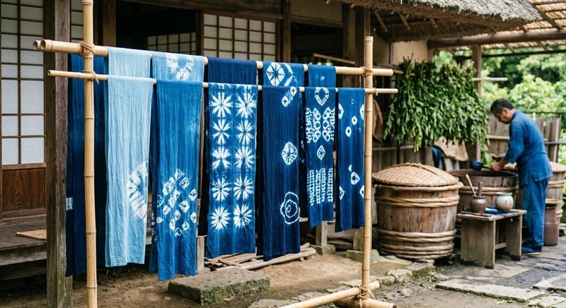
The deep indigo dyeing tradition of Tokushima, Awa Aizome dates to the 16th century when the Awa domain monopolized indigo production for samurai armor and farmer workwear. The fermented dye paste called sukumo is produced through a 100-day process using indigo leaves harvested from the Yoshino River basin. Cloth is dipped repeatedly in vats of fermenting indigo, deepening from sky-blue to the richest "Japan Blue" with each immersion — the same shade adopted by Japan's national football team uniforms. The Aizumi Indigo House and master dyers like Buaisou and Tatsumi welcome visitors for full-day dyeing workshops and demonstrations.
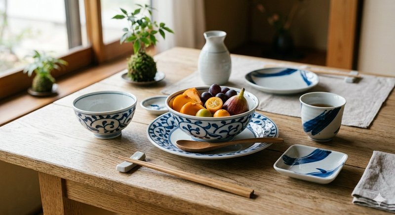
The blue-and-white porcelain of Ehime, Tobe Ware was founded in 1777 when local fief lord Kato Yasutoki recruited potters from Hizen (today's Saga) to use the area's whetstone-grade kaolin clay. The signature aesthetic is thick, slightly milky white porcelain decorated in dark indigo gosu cobalt — bold floral patterns, pine, bamboo, and plum motifs painted with confidence and economy. Pieces feel substantial in the hand and stand up to everyday use. Around 80 kilns operate in the small Tobe village, and the Tobe Pottery Festival each April brings collectors from across Japan. The Tobe Pottery Museum offers throwing and painting workshops daily.
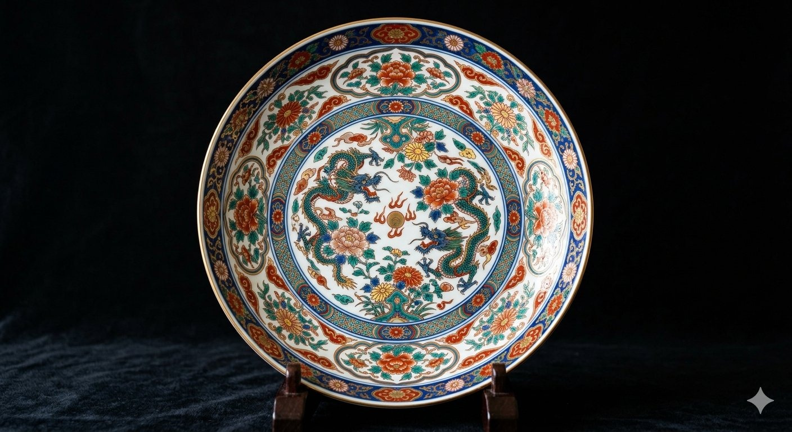
Japan's first porcelain, Arita Ware began in 1616 when Korean potter Yi Sam-pyeong discovered kaolin near Arita village. Within decades the Dutch East India Company shipped Arita exports to European royal courts, and the village's white porcelain decorated with cobalt sometsuke and overglaze enamel remains synonymous with Japanese ceramics worldwide. The opulent Kakiemon and Imari styles developed here adorned the cabinets of Augustus the Strong of Saxony, inspiring Meissen porcelain itself. The annual Arita Pottery Fair each Golden Week draws a million visitors. Workshops at Kakiemon Kiln, Genemon Kiln, and the Saga Prefectural Kyushu Ceramic Museum welcome international guests.
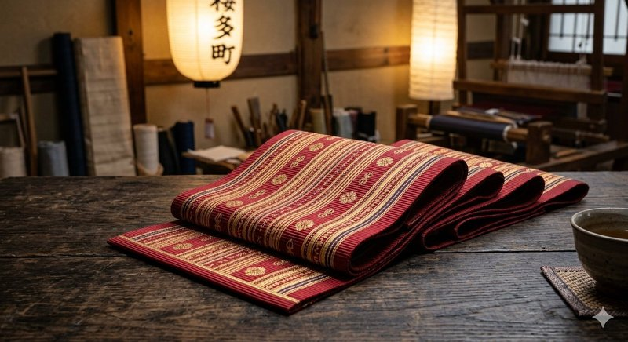
The lustrous silk weaving of Fukuoka, Hakata Ori was born when local merchant Mitsuda Yazaemon traveled to Song-dynasty China in 1241 and returned with weaving techniques. Tightly packed warp threads create a stiff, resilient fabric instantly recognizable on the obi belts worn by sumo wrestlers and martial artists — the cloth holds knots better than any other silk. Five auspicious patterns called gojo no kotai (Buddhist altar fittings, water designs, lattice motifs) traditionally adorn the obi. Hakata Ori was favored for centuries by samurai for their formal hakama. The Hakata Traditional Craft and Design Museum runs daily demonstrations and small-loom workshops for visitors.
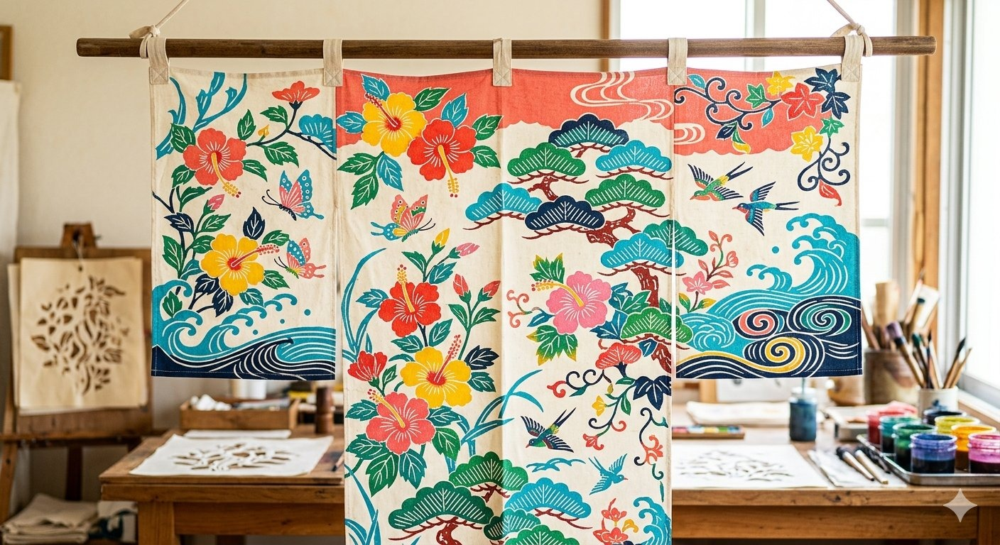
The vivid resist-dyed textile of Okinawa, Bingata combines stencil-cut paste dyeing with hand-painted color in luminous reds, yellows, indigos, and greens that capture the subtropical light of the Ryukyu Islands. The craft developed in the 14th century as Ryukyu Kingdom court attire, drawing techniques from Chinese, Indian, and Javanese textile traditions. Hibiscus, deigo flowers, butterflies, and ocean waves repeat across kimono, kariyushi shirts, and decorative panels. Three master families — Shiroma, Chinen, and Sakima — preserved the tradition through wartime devastation. The Shuri-Ryusen workshop in Naha offers hands-on stencil dyeing in beautiful surroundings overlooking historic Shuri Castle grounds.